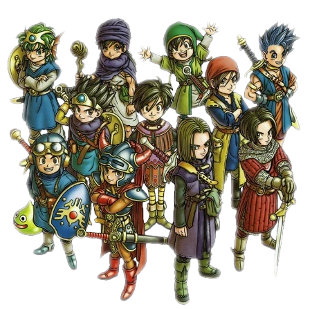
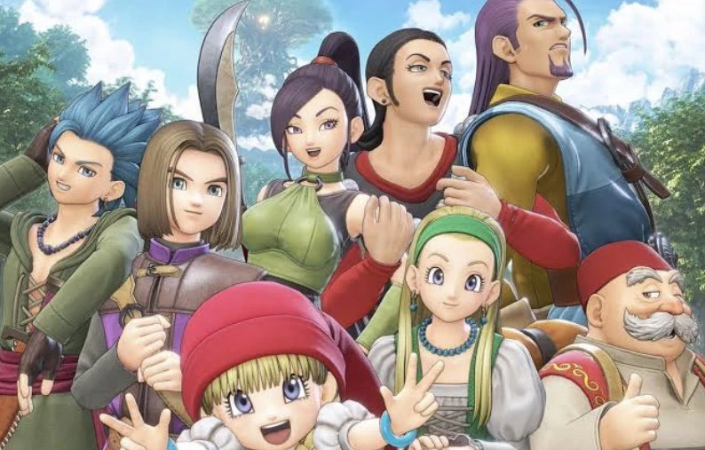
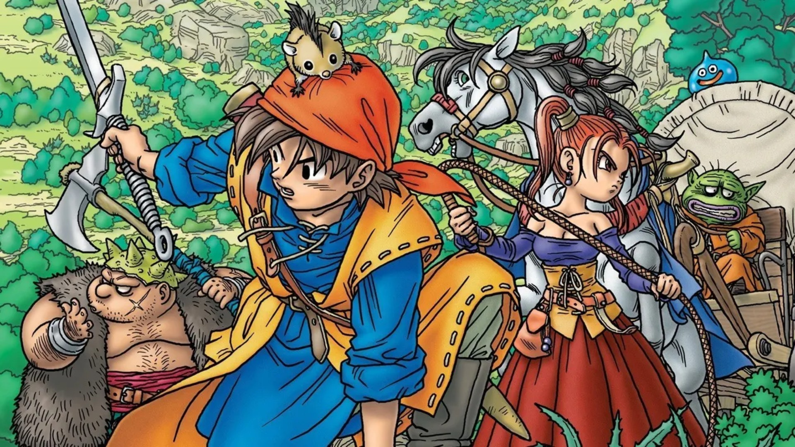
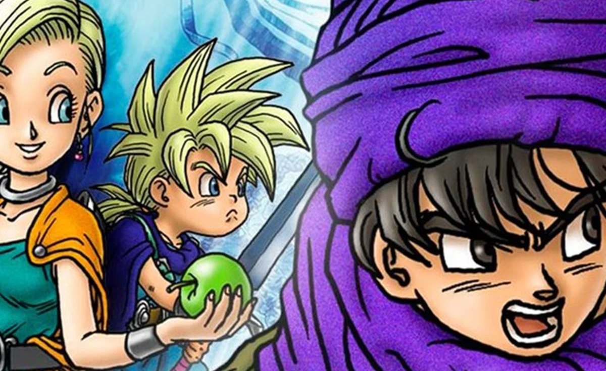

Bem-vindo ao Reino de Dragon Quest
O que é Dragon Quest?
Dragon Quest é uma das séries de RPG mais importantes da história dos videogames, criada pela Square Enix. Conhecida por seu estilo clássico, personagens icônicos e arte de Akira Toriyama (criador de Dragon Ball), Dragon Quest marcou gerações desde 1986.
Alguns jogos da série
-
Dragon Quest XI S - Echoes of a Elusive Age
 Lançamento: 2017Lançado inicialmente para o PlayStation 4 e posteriormente para todas as plataformas, é considerado um dos melhores JRPGs modernos, com belos gráficos e sistema clássico.
-
Dragon Quest VIII - The Journey of the Cursed King
 Lançamento: 2004Lançado para o PlayStation 2, é um dos títulos mais amados, com mundo aberto vibrante, personagens marcantes e uma trilha sonora sensacional.
-
Dragon Quest V: Hand of the Heavenly Bride
 Lançamento: 1992Um clássico do Super Nintendo, um dos jogos mais emocionantes da franquia, famoso pela história em que acompanha uma geração de heróis.